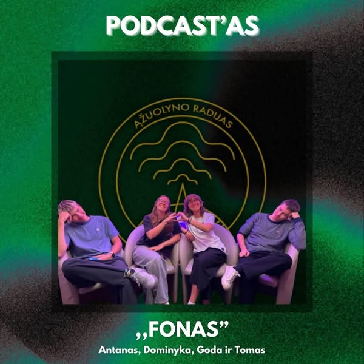

Fonas

FONAS
F-antastiškas
O-riginalus
N-epamirštamas
A-mbingas
S-uperinis
Draugų kvartetas FONAS! Tai nuotaikingas podcast'as, apimantis įvairias šiandienines aktualias temas nuo mūsų brangaus „Ąžuolyno“ iki Klaipėdos miesto, Lietuvos bei pasaulio problemų ir net visatos paslapčių bei įdomybių! Siekiate pasijuokti? Atsipalaiduoti? Ar sužinoti ką nors naujo? Semkitės geros ENERGIJOS ir C vitamino kartu su mumis!